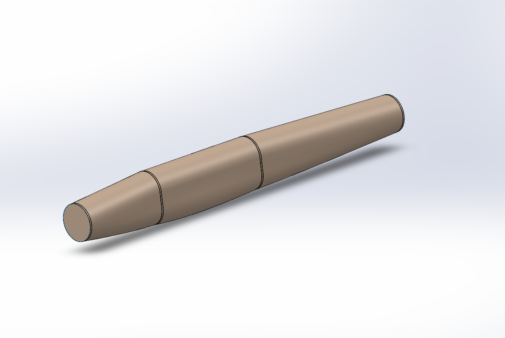
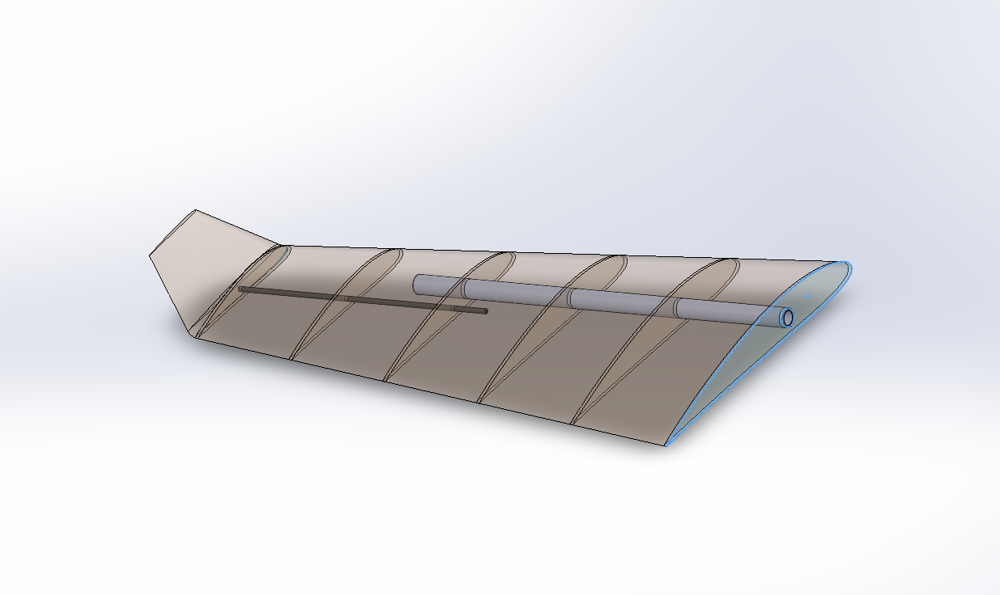
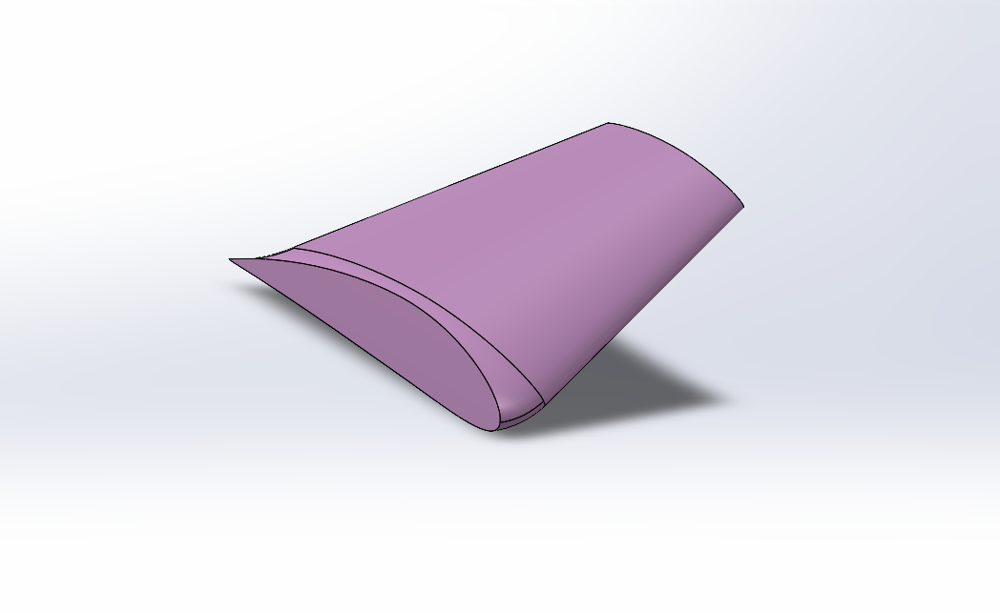
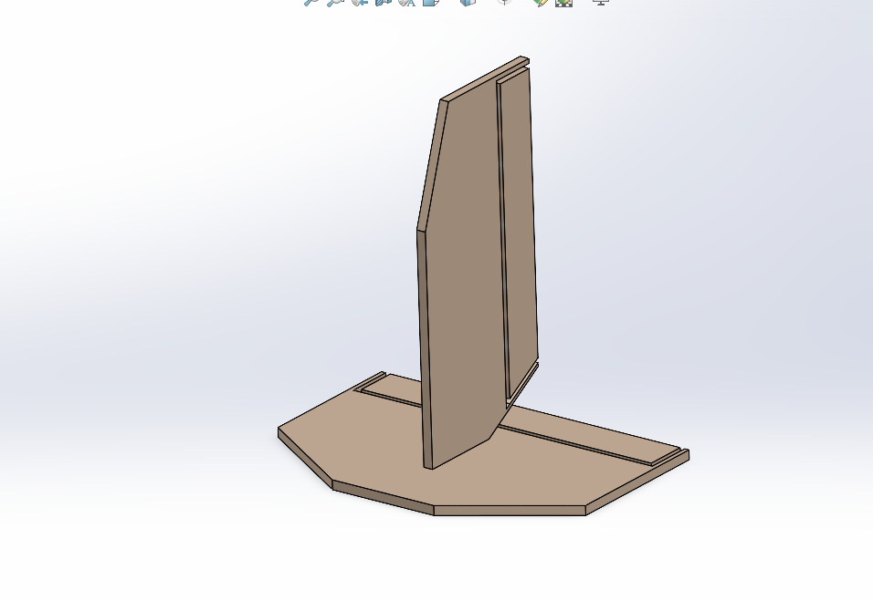

Project Overview
URAAN was a team of six undergraduate Mechanical Engineering students from NED University that competed in Propellair 2024 — one of the largest annual student engineering competitions in Karachi, organised by the IMechE NED student chapter. The project involved the complete design, aerodynamic analysis, fabrication, and flight of a radio-controlled fixed-wing aircraft. As co-lead and primary designer, I was responsible for the full SolidWorks model, CFD analysis of the wing and fuselage, FEA of the wing structure, coordinating all six team members, and serving as the primary point of contact with competition judges and organisers.

Challenge
The core engineering challenge was designing an aircraft that could survive the full competition — multiple test flights, acrobatic manoeuvres, and payload tasks — without structural failure. At Propellair 2024, five to eight competing aircraft crashed and were completely destroyed during test or competition flights. Designing for both aerodynamic performance and structural resilience simultaneously required validated analysis before fabrication. As co-lead I also coordinated six team members across design, fabrication, and electronics procurement — ensuring every component was ready on time for competition day.


Solution
The aircraft was designed component by component in SolidWorks before being assembled into a complete model. Each part was individually modelled and validated before integration — ensuring the final assembly was structurally coherent and aerodynamically sound.
Circular Fuselage
The fuselage was designed with a circular cross-section — a deliberate departure from the conventional rectangular fuselages used by all competing teams. A circular section distributes stress more evenly under bending and torsional loads, and produces lower parasitic drag compared to a flat-sided body. This was the first circular fuselage in five years of Propellair competition history.

Wing Structure
The wing was modelled with a NACA aerofoil profile and an internal rib-and-spar construction. Multiple ribs were distributed spanwise to maintain the aerofoil shape under aerodynamic loading, supported by aluminium spars running along the span. The spars were assembled into the wing structure in SolidWorks using the Assembly environment, with mates applied to constrain each spar accurately relative to the rib positions. The transparent SolidWorks rendering reveals the internal structural layout — the same configuration that was later fabricated in balsa wood with aluminium spars. FEA of the wing structure validated structural integrity under expected flight loads before any physical fabrication began.

Winglets
Winglets were proposed and designed by me based on aerodynamic reasoning — they reduce induced drag by suppressing wingtip vortices, improving the lift-to-drag ratio particularly during sustained level flight and payload tasks. These were the first winglets introduced in Propellair competition history. The winglet geometry was modelled as a canted surface blending smoothly with the wing tip.

Empennage
The empennage — comprising the vertical stabiliser and horizontal tail — was modelled as a conventional T-tail configuration. The surfaces were sized to provide adequate pitch and yaw stability across the aircraft's expected flight envelope. The empennage was assembled with the fuselage and wing in SolidWorks to verify alignment and clearance before fabrication.

Full Assembly & CFD Analysis
All individual components — fuselage, wings, winglets, and empennage — were assembled in SolidWorks into the complete URAAN aircraft model. CFD analysis of the wing and fuselage was then conducted in ANSYS Fluent using a wind tunnel domain, producing velocity contour and pressure distribution results confirming aerodynamic efficiency. The team then fabricated the aircraft using balsa wood and carbon fibre spars, with electronics selected and integrated under my coordination.